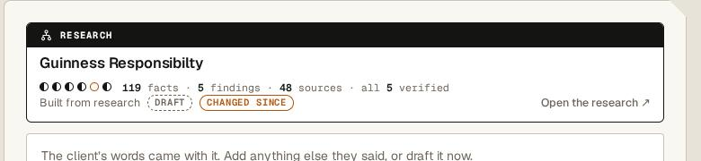
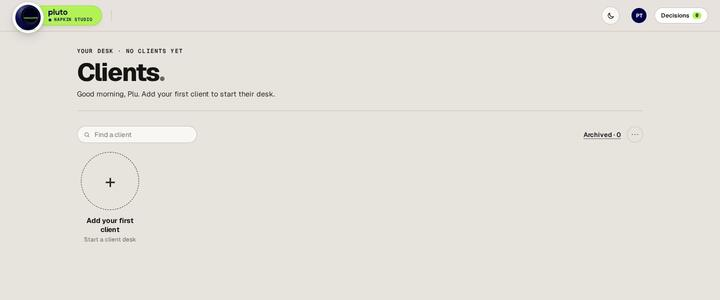
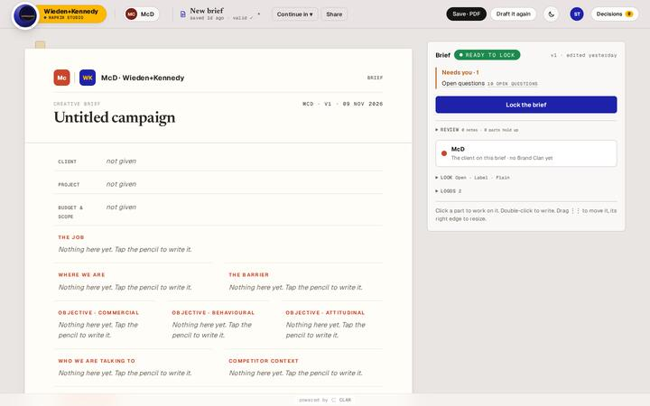
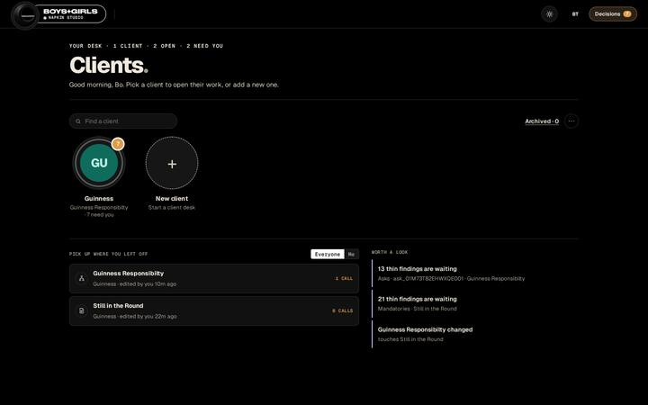
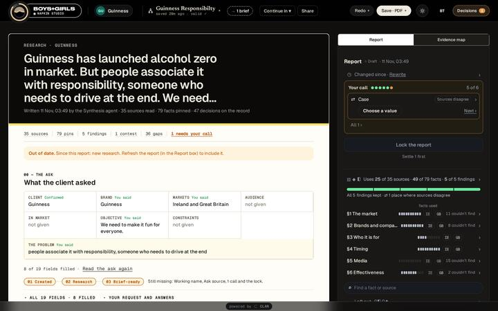
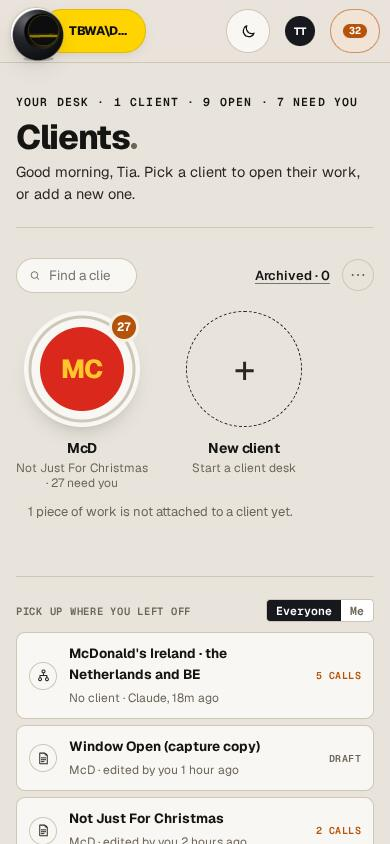
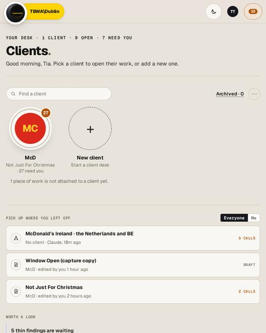
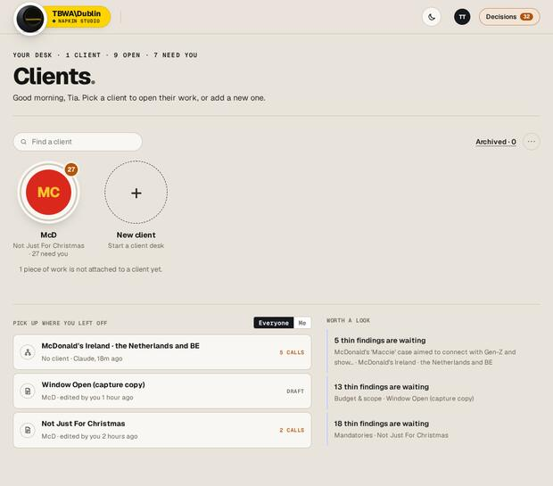

09 · Source cards, crumbs, Your call, empty, loading, dark, phone
Patterns
These are the pieces that repeat across tools. Build them once (most already exist in app/templates/shared/) and reuse them.
Source cards between tools
When work moves from one tool to another (Continue in → a new brief from research, or Link to an existing one), the receiving tool shows the source as a source card (shared/source-card.html): a tab with the kind (RESEARCH), the title, confidence and counts, and "Open the research ↗". The lineage chip in the bar ("from Guinness Responsibility") and the drawer's Lineage tab name the same link. When the parent changes, an update notice appears in the banner row under the bar.

Crumbs and drill-down
Every panel uses the same crumb. Brief: .sp-crumb, mono 12px, "← Brief › Part". Research: .pv-crumb, 12.5px, parts clickable, clipping with an ellipsis at 180px, × always shown. There are at most two levels. Esc, ← or a click on empty paper go back, and Back restores the scroll.
Do
"← Report › ◗ Finding 1 › ◆ Fact ×", with the fact lit on the page.
Don't
A third level, a modal, or a drawer opened from inside the panel.
Your call
A call is a decision only a person can make. It appears in three places, which must count the same thing: the amber tag on the part or line (paper), the Your call · n open box in the panel (Brief: .needs-box; Research: .pv-box.call with one dot per check), and the call card at the top of the Decisions drawer. Its actions are secondary buttons (Keep / Cut, Fix with the agents / Keep them as they are, and say why). After an answer it moves on to the next call.
Needs you
Amber (--warn) is used only for this. On the desk it is the circle badge and "n CALLS". In the bar the Decisions button turns amber with a count. In the panel it is "Needs you · n". The medallion turns needs only when the app you are in needs you. For an agency with accentUse:'line' (Catapult), --needs is the accent.
Empty states


Write empty states as a sentence that says what to do. A panel section with nothing in it is not drawn at all.
Loading
Loading is the Deep O in working: with real progress when known, otherwise the indeterminate arc. It shows only after 400ms (late show). In a document, a run shows the stage and then the 44px side job line. Buttons that write say "Saving…" and are disabled while busy.
Dark mode
Dark is set by data-theme="dark" on html (localStorage napkin.theme, toggled by the bar's theme button). The tokens are the dark column on Foundations. The primary fill turns to the agency's accent (except with accentUse:'line'). The sheet keeps its paper character with a deeper shadow. Templates read data-color-scheme and use their --nd-* copies of the tokens.


Responsive breakpoints
| Width | What changes | Where |
|---|---|---|
| ≤ 1500px | document name in the bar capped at 180px | nui.css |
| ≤ 1180px | the job chip hides | shell.css |
| < 900px | Research panel becomes a bottom sheet | campaign-research |
| ≤ 760px | app head stacks | nui.css |
| ≤ 720px | bar: no separators or NAPKIN STUDIO line, 44px targets, Decisions label hidden, lineage chip and job chip hidden, a document's bar scrolls sideways in itself; desk gutter 16px; client rows drop the age | shell.css, nui.css |
| ≤ 400px | medallion 52px; the pill shows the agency icon instead of the wordmark | shell.css |
| ≤ 360px | medallion 46px, bar buttons 40px | shell.css |


